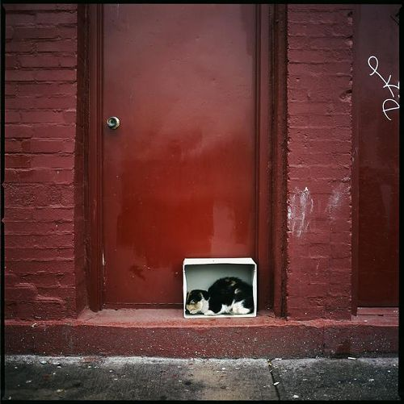
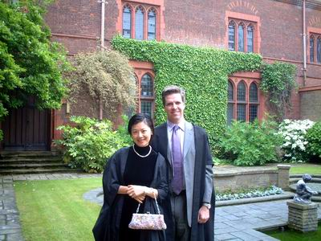

我用所有报答爱 @ Nov 21, 2006
《我用所有报答爱》 －《夜宴》主题曲MP3
只为一支歌，血溅最深的寂寞；
只为一场梦，摔碎了山河；
只为一颗心，爱到分离才相遇；
只为一滴泪，模糊了恩仇；
我用所有报答爱，
命断在归途里，
岁月从此一刀两断，
永不见风雨。
《我用所有报答爱》 －《夜宴》主题曲MP3
只为一支歌，血溅最深的寂寞；
只为一场梦，摔碎了山河；
只为一颗心，爱到分离才相遇；
只为一滴泪，模糊了恩仇；
我用所有报答爱，
命断在归途里，
岁月从此一刀两断，
永不见风雨。

某种情绪的发生有时来自于期待，可是为什么要期待？如果一切可以招之即来挥之即去，任何事情都可拿得起放得下，那么这个冷漠的反问将令我失去对某些事物的热情和关心。
上周无意翻到一个台正在播《阿Q正传》，极老的电影。那天特别有兴趣的看到电影结束，温习了阿Q精神之后，我在想是不是也要拥有一个到死都不知道怎么死的人生？
中国无耻的男人岂止是在娱乐圈，睁开眼睛看看我们的周围。肮脏不只在交易里，也存在于所谓的情感中，那么，只能用看似冠冕堂皇的两个字“伤害”作为结局。人心是我们最想把握的却是最难把握的！
点击:张钰的BLOG
市场价格要乘以4哦~~


公司最终还是挪到下周三搬家，本来这个周末就要搬的。这几天办公室里乱七八糟，不过平时好象也没见整洁过哦？小强到处窜，不要的东西全当废品卖，大家互通有无交换样品，偶乘机罗列了一包玩具，也送出去不少样品，有些品质很好的样品也扔，真TM浪费！
真希望新办公室和干净有调理的同事坐一起办公。有的人东西特别多，桌子上堆满了文件，好象从来没见收拾过，他坐的地方几乎只能放下一双脚，可见多么日理万机！办公室除了东西多，小强品种尺寸也很丰富哦，常常边吃早餐边用餐巾纸在桌子周围捏小强，时常也能听见同事大呵一声，接着“啪”一下，习惯了之后已经没有人抬头问发生了什么。


有个海归的同事要结婚了，婚礼定在12月份，太太是艺术学院毕业的，没有找工作，在家里教学生弹钢琴。认识半年后领证。昨天听那同事讲，他给太太办了张信用卡的附卡，一个月被刷掉5万元，邻居家说他太太可以把整个金鹰搬回家了。当然结婚花钱是肯定的，可一个月刷5万还是很难想象的，尤其是只为自己买东西。毕竟花钱快挣钱慢。不由让人感叹我怎么就没有享受过这种附卡待遇呢？听同事讲已经没收了太太的附卡。其实花自己帐户里的钱总比花人家的钱落得轻松自在，不是吗？
同事们议论此事，有个男人说：“人家LP温柔，海龟同事出去玩，那太太从来不追不管，你看多好...”
听完这话我的第一反应是她并不那么爱他！
接着我问道：“男人到底需要聪明省事的太太，还是真实的爱他的太太？”有人说男人喜欢二者兼顾的太太，可是男人自己是不是也能如此完美呢？
有个电视节目叫《健康宝典》，有关心理生理卫生的讨论，会请嘉宾，精神分析师、医生来现场做客，昨晚的宝典尤其是观众...感觉象是艺术学院的学生，放眼望去气质不错的多。这期话题有关“梦”的，解释人为什么会做梦。我常常做梦，所以特别认真的听了听。精神分析师说人的脑电波呈周期性交替活动，做梦时人的眼皮会动，脑波呈剧烈活动期，这是做实验的医生叫醒受试者问他是不是做梦了，受试者说是的。有人认为晚上没做梦，其实他是在脑电波的平缓期醒来所以不记得自己做梦了。每个人晚上都做梦，有人记得有人不记得，就看你在什么周期阶段醒来。
想要睡个好觉，节目中建议在睡前哼歌、做做舒展运动，保持好心情入眠。还交了两套按摩操来帮助提高睡眠质量。分析师认为梦是自己的一笔资源，比如梦见好的旋律，好的段子，好的情景，不记录下来浪费，分析师建议把每天记得的梦记录下来，可以帮助认识自己，保存资源。人们越来越关注心理卫生健康，令人欣慰！
这是办公室最冷的季节，大厦的中央空调要到零下才会开，每每这个时候我都觉得特别冷。外面虽然阳光很充足，可是办公室里却一点都不温暖，尤其今天，脚趾头能感觉到袭人的冷气。放张春天的鲜花增加点气氛吧！
开会通知这个周末要整理好个人文件和物品，打包编号写上自己的姓名，周末两天搬家公司帮我们搬到新办公地址。可是听说家具还没进去，不知道是否能够顺利进行。几次开车路过新办公区，门头上的字还还蒙着白色的封条。集团买下这块地，盖了几处办公大楼，外面看上去既象制衣厂又似医药车间，想必里面一定实用无比。只是拍板最终设计施工稿的人审美实在不敢恭维。最关心的是停车费，整个地下停车场给我们公司90几个车位，开始说要140元/月/辆，领导建议在80元/月/辆，昨天中午听说最新消息“免费”停车。
说到停车，想起这段时间我一直把车停在大院里，先前管理车库的阿姨们对我也面熟了，一般会让我把车停在过道边上，总之停几天就搬了。开始我停在前院，保安问我要钱我也给。有一天一个保安问我要名片，我问他要名片干什么？他说你们新办公区需要保安吗？我说这事应该找那里的物管，况且用保安也是和保安公司联系。他马上说没事的时候去找你...见我没搭他话茬，接着又补充道：“车停这里如果需要挪位置我好打电话给你吧。”我未置可否的就离开了，听他这话跟吃了只苍蝇似的，为什么有的人就这么不上路子呢？自那以后我都停在过道边上去了。
想到前后有关停车的事情，要么费神要么费财，为什么？
先说费神：在住宅小区停车，看车的老头每天早晨见到我的第一句话肯定是：“把车位给你停了，包月的车还没来呢。”不然就是“我都不想给你们停车了，其他车都停不了。”如果早晨心情好听他唠叨还能忍受，要是早晨心情平平听他唠叨那效果...看见了吗？象这种手上有1%小权利的国人一般都会充分使用。偶为了每月节约200元停车费天天早晨受这份罪。费神的第二则原因就是上面提到的类似保安的问题；
费财：停车其实是应该重视的事情。我同事的车停在旧式小区的过道边，早晨起来天窗被凿了个洞，一面窗户被砸。我的车被人撬锁，自己花了2850换了整套锁，算算可以停在正规停车场多少次哦？始终觉得宁愿多花点钱也不愿意糟那份人情罪。今早看车库的阿姨问我要样品了...钱的事情好解决，人情债难还，即使你已经花了钱也一样！
早晨到办公室手里拿着早点边吃边打开喜欢的几个BLOG，发现点开的清一色是女博客，难道女人到了一定年龄阶段关注同性更多？洪晃的页子里置顶章子怡，上面写道“我这几天纳闷，这外国人天天挑中国的刺，什么污染啊，贪官的，就一章子怡，还给中国人争口气，我们自己媒体怎么非跟她过意不去。不知情地就被忽悠着，没辙；这知情的，可真是觉得她冤,更得顶她一下！”有时会和周围男士谈论到章子怡，大部分都是不屑的表情，不仅如此还要表示如何的厌恶...我对他们的反应一直都疑惑，我本人很喜欢章子怡，她身上有股坚韧的劲儿，工作努力也很有审美，这与她之前进行过多年的舞蹈训练不可分。
有关对章子怡不满情绪的产生，我粗略归纳了以下原因：
1、她和成龙拍电影那段儿，香港媒体对她总是进行负面报道给我留下了深刻印象。只要善良的有些良知的人都可以分辨出这些文字中的某种情绪！娱记的架势简直就跟听见门外狗叫就要趴墙头的村妇无异。有些记者不是进行真实记录报道，而象个主观+想象+恶意的“长舌妇”般刻意混淆、引导公众的认知。有的记者嘴巴上讲得头头是道，貌似公正合理，行为上跟流氓没区别，见过名校新闻系毕业的，见过国家某机构的新闻编辑，见过讲话吊而郎当的...有些真令人鄙夷、鄙视！这些媒体从业者如何能担当一个严谨真实的新闻传播者？如果记者可以这么做，那不如从街头巷尾找几个中老年妇女当娱记更充分发挥人家所长。
2、美丽的女性会受到公众更多关注，一个美丽的女性走向成功之路比同行人稍微顺利些、速度快了点，一定会遭人妒忌，甚至招人诽谤。对于男性，女人美丽是可以的也是可以被男性所利用的，但美丽的同时还很努力并且成功了，那简直是对男性群体自尊心的伤害。
3、在章子怡国际知名度不断提高，身价不断翻翻的状况下，有些人是不是也具有“仇富心理”存在呢？报纸上曾经报道刘晓庆说象章子怡这种女孩子大陆多得是，殊不知match point的运气此时占了主要因素，可是这种运气不会一直有，没有实力打到最后，如何会有match point出现？难道实力是靠运气撑过半场的？
4、萝卜青菜各有所爱，喜欢不喜欢没有理由。我每每看见毕福剑就满腑不舒服，他那种做作出来的所谓幽默令人浑身起鸡皮疙瘩。还好，我不是记者，不然保不准把老毕传播成啥样呢！
今天无意中找到姜丰的BLOG，这个我曾经喜欢的主持人居然在剑桥读研，还嫁了个外国人。其实就是喜欢她这个人，与她是否从事过正大综艺节目主持人无关。最近工作忽然空闲地不行，偷偷在电脑上逐一将她的BLOG一一阅读，她还真有东北人的那股率真劲，虽然婆婆妈妈什么都写，可是字句都是透着生活的真实感受，不矫情。尤其看到一篇《去，还是不去》中写道：“His money is our money, my money is mine.”呵呵，大多女人都这么想吧，我也这么想的，可是真正的自己还是自尊心太强，不能做的彻底。
姜丰和她的丈夫小里

姜丰的微笑还是那么甜美，只是她穿衣品味仍然残留着东北人的风格，没什么太多变化。不过这种状况一是绝对自信，不需要外过多修饰；二则真是的想打扮不知道怎么打扮。用姜丰的话讲：“在剑桥过得啥牌子都早无用武之地。一想，亚洲人、尤其是那些商场和酒店里的人比较势利（等着挨大板砖,ouch!），...”姜丰算钱也特有意思，人家一点不扭捏，大大方方的将小私心暴露出来...我觉得特羡慕，女人还是应该活得“柔弱”一些好，干吗自己和自己过不去呢？姜丰今年好象出版了新书《飞一样飞》， 是关于毕业十年的，有点怀旧。